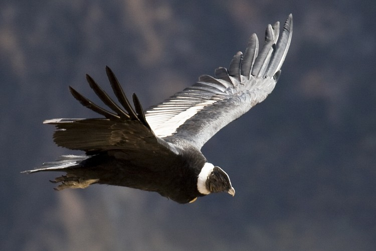
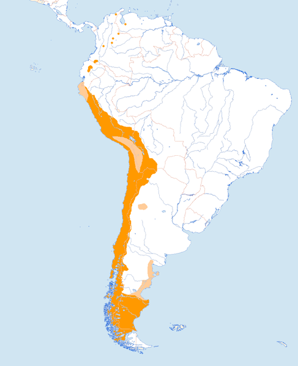

Sección Condor
Volver a InicioCONDOR
(Vultur gryphus)
Descripción
El cóndor andino, cóndor de los Andes o simplemente cóndor (Vultur gryphus)2 es una especie de ave de la familia Cathartidae que habita en Sudamérica. El orden al que pertenece su familia se encuentra en disputa. Se extiende por la cordillera de los Andes, cordilleras próximas a ella y las costas adyacentes de los océanos Pacífico y Atlántico. Es el ave no marina de mayor envergadura del planeta. No posee subespecies. Su nombre procede del quechua kuntur.
Es un ave grande y negra, con plumas blancas alrededor del cuello y en partes de las alas. La cabeza carece de plumas y es de color rojo, pudiendo cambiar de tonalidad de acuerdo al estado emocional del ave. A diferencia de la mayor parte de las aves de presa, el macho es mayor que la hembra.
Es un ave carroñera. Alcanza la madurez sexual a los 5 o 6 años de edad y anida entre los 1000 y 5000 msnm, generalmente en formaciones rocosas inaccesibles. Posee una tasa de reproducción muy baja , se espera que al menos ponga un huevo cada dos años. Es una de las aves más longevas, pudiendo alcanzar la edad de 75 años en cautiverio.
Es un símbolo nacional de Bolivia, Chile, Colombia, Ecuador y Perú, y tiene un importante rol en el folclore y la mitología de las regiones andinas de Sudamérica. El cóndor andino fue declarado monumento natural de Chile mediante decreto el 30 de junio de 2006.5
El cóndor andino es reconocido como una de las aves voladoras más grandes del planeta, llegando en ocasiones a ser superado en envergadura solamente por el albatros viajero y el real,7 si bien el cóndor es más alto, más robusto y más pesado que aquellos. Los adultos llegan a medir hasta 142 cm de altura, y de 270 hasta 330 cm de envergadura,8 9 con una media de 283 cm,10 y pesan de 11 a 15 kg los machos y de 8 a 11 kg las hembras. Poseen la cabeza desnuda, de color generalmente rojizo, aunque el mismo puede cambiar según el estado de ánimo del animal; pico de borde muy cortante y terminado en gancho. Las alas son largas y anchas, y las patas, no prensiles, poseen uñas cortas y poco curvas, y con la inserción del dedo posterior elevada. Las mismas están adaptadas para la marcha y para la sujeción de la carroña. Alcanzan la madurez sexual aproximadamente a los 8 años. El plumaje juvenil de ambos sexos es de color marrón hasta alcanzar en mudas sucesivas el característico plumaje negro-azabache de los adultos. Una ancha banda blanca resalta en el dorso de las alas y un nítido collar blanco no completamente cerrado al frente, protege la desnuda piel del cuello.
Es considerada como Patrimonio Cultural y natural de Sudamérica.
Clickear aquí para ver un documental.
Distribución geográfica
Los cóndores viven en zonas ventosas porque estas les permiten planear a través de las corrientes de aire sin esforzarse. En el caso del Cóndor andino vive en regiones montañosas, de allí su nombre, cerca de las costas para favorecerse de las brisas del mar, también pueden vivir en regiones desérticas que poseen corrientes fuertes de aire térmico. El lugar donde vive el cóndor andino se extiende por toda la cordillera de los andes y en cordilleras cercanas al océano pacífico y atlántico.
| PAISES | Argentina |
| Chile | |
| Bolivia | |
| Peru | |
| Ecuador | |
| Venezuela (zona occidental) |
Ver mapa de referencia:
Tabla de Clasificación
| REINO | PHYLUM | SUBPHYLUM | CLASE | SUPERORDEN | ORDEN | FAMILIA | GENERO | ESPECIE |
|---|---|---|---|---|---|---|---|---|
| Animalia (animal) | Chordata (cordados) | Vertebrata (vertebrados) | Aves | Neognathae (aves carenadas o con quilla) | Ciconiiformes | Cathartidae | Vultur | Vultur griphus |
Galería de Imágenes